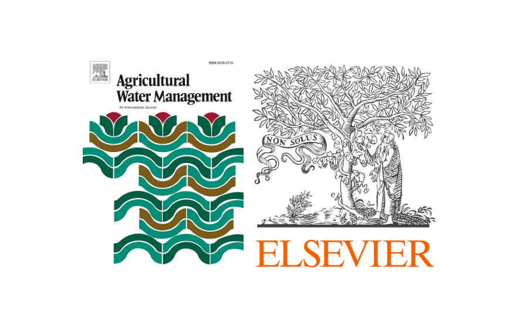
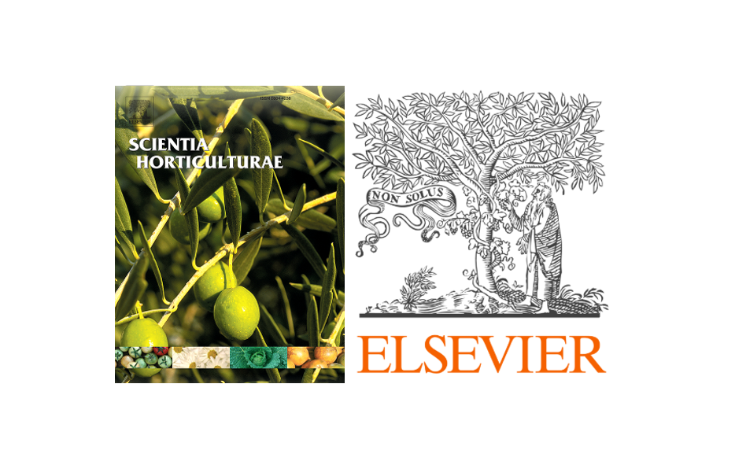
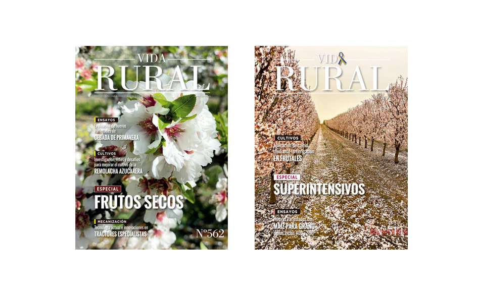

Peer-reviewed articles, conference papers and technical reports.

Precise irrigation scheduling is essential to optimize water use in woody crops such as almond. This four-year study evaluated an irrigation strategy based on evapotranspiration estimated using LiDAR sensors and thermography in a commercial almond orchard (cv. Lauranne). Four treatments were compared, including over-irrigation and water deficit scenarios. Results showed that irrigation matched to actual evapotranspiration maximized yield (2800 kg/ha).
Read paper →
This study quantifies the impact of tree structural heterogeneity, characterized by LiDAR, on yield prediction and water use efficiency in almond orchards. Incorporating actual tree size variability into water-yield models reveals that uniform management masks substantial efficiency losses, particularly at intermediate irrigation levels where precision irrigation gains are maximized.
Read paper →
El Grupo Operativo Smart Almond nace con la intención de hacer más sostenible y eficiente el cultivo del almendro, aprovechando las ventajas de la digitalización y el uso responsable del agua. El proyecto busca llevar la metodología de teledetección y sensores a más fincas piloto que sirvan como ejemplo para otros agricultores.
Read paper →